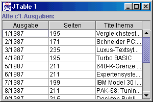
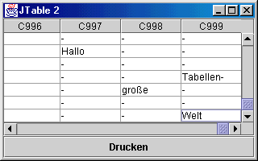
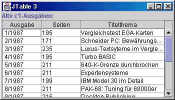
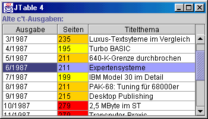

39.2 JTable
39.2.1 Erzeugen von Tabellen
Eines der in anspruchsvollen Benutzeroberflächen am häufigsten
gebrauchten Dialogelemente ist die Tabelle, also eine mehrzeilige,
mehrspaltige Darstellung von Daten. Diese im AWT fehlende Komponente
wird in Swing durch die Klasse JTable
zur Verfügung gestellt. Mit ihrer Hilfe lassen sich unterschiedlichste
Arten von textuellen oder grafischen Daten tabellarisch darstellen
und editieren. Das Programm hat dabei weitreichende Möglichkeiten,
die Tabelle zu konfigurieren, ihren Inhalt anzupassen und auf Benutzerereignisse
zu reagieren.
Die wichtigsten Konstruktoren von JTable
sind:
public JTable(Object[][] rowData, Object[] columnNames)
public JTable(Vector rowData, Vector columnNames)
public JTable(TableModel dm, TableColumnModel cm, ListSelectionModel sm)
|
javax.swing.JTable |
An den ersten Konstruktor werden die darzustellenden Daten in Form
eines zweidimensionalen Arrays übergeben. Dessen erste Dimension
enthält die Zeilen, die zweite die Spalten. Zur Darstellung in
der Tabelle werden die Array-Elemente mit toString
in Strings umgewandelt. Das zweite Argument enthält ein Array
mit Strings, die als Spaltenköpfe angezeigt werden.
Statt der Übergabe von Arrays lässt sich auch der zweite
Konstruktor verwenden und die Daten und Spaltenköpfe können
in einem Vector
übergeben werden. In diesem Fall muss der Datenvektor rowData
für jede Zeile einen Untervektor mit den Datenelementen dieser
Zeile enthalten.
Der dritte Konstruktor stellt die allgemeinste Möglichkeit dar,
eine JTable
zu konstruieren. Hierbei werden alle drei Modelle der Tabelle explizit
an den Konstruktor übergeben. Das TableModel
stellt dabei die Daten zur Verfügung, das TableColumnModel
definiert die Spalten und das ListSelectionModel
ist für die Selektion von Tabellenelementen zuständig. Werden
alle drei Modelle separat instanziert und übergeben, hat das
Programm die volle Kontrolle über alle Aspekte der Tabellendarstellung
und -verarbeitung.
Eine einfache Tabelle lässt sich also sehr schnell erzeugen:
001 /* Listing3904.java */
002
003 import java.awt.*;
004 import java.awt.event.*;
005 import javax.swing.*;
006
007 public class Listing3904
008 extends JFrame
009 implements TableData
010 {
011 public Listing3904()
012 {
013 super("JTable 1");
014 addWindowListener(new WindowClosingAdapter(true));
015 JTable table = new JTable(DATA, COLHEADS);
016 Container cp = getContentPane();
017 cp.add(new JLabel("Alte c\'t-Ausgaben:"), BorderLayout.NORTH);
018 cp.add(new JScrollPane(table), BorderLayout.CENTER);
019 }
020
021 public static void main(String[] args)
022 {
023 Listing3904 frame = new Listing3904();
024 frame.setLocation(100, 100);
025 frame.setSize(300, 200);
026 frame.setVisible(true);
027 }
028 }
|
Listing3904.java |
Listing 39.4: Eine einfache Tabelle
Die Ausgabe des Programms ist:

Abbildung 39.5: Eine einfache Tabelle
In Listing 39.4 wurden zwei
Konstanten DATA und COLHEADS
verwendet. Sie dienen als Beispieldaten für die Programme dieses
Abschnitts und wurden als Konstanten in dem Interface TableData
definiert:
001 /* TableData.java */
002
003 public interface TableData
004 {
005 public static final String[][] DATA = {
006 {" 1/1987", "195", "Vergleichstest EGA-Karten"},
007 {" 2/1987", "171", "Schneider PC: Bewährungsprobe"},
008 {" 3/1987", "235", "Luxus-Textsyteme im Vergleich"},
009 {" 4/1987", "195", "Turbo BASIC"},
010 {" 5/1987", "211", "640-K-Grenze durchbrochen"},
011 {" 6/1987", "211", "Expertensysteme"},
012 {" 7/1987", "199", "IBM Model 30 im Detail"},
013 {" 8/1987", "211", "PAK-68: Tuning für 68000er"},
014 {" 9/1987", "215", "Desktop Publishing"},
015 {"10/1987", "279", "2,5 MByte im ST"},
016 {"11/1987", "279", "Transputer-Praxis"},
017 {"12/1987", "271", "Preiswert mit 24 Nadeln"},
018 {" 1/1988", "247", "Schnelle 386er"},
019 {" 2/1988", "231", "Hayes-kompatible Modems"},
020 {" 3/1988", "295", "TOS/GEM auf 68020"},
021 {" 4/1988", "263", "Projekt Super-EGA"},
022 {" 5/1988", "263", "Neuheiten auf der CeBIT 88"},
023 {" 6/1988", "231", "9600-Baud-Modem am Postnetz"}
024 };
025
026 public static final String[] COLHEADS = {
027 "Ausgabe", "Seiten", "Titelthema"
028 };
029 }
|
TableData.java |
Listing 39.5: Das Interface TableData
Auf diese Weise können die Daten in den folgenden Beispielen
dieses Abschnitts einfach mit der Anweisung implements
TableData importiert und dem Programm zur Verfügung
gestellt werden. Diese - auf den ersten Blick - etwas ungewöhnliche
Verwendung eines Interface ist ein Standard-Idiom in Java und wurde
in Abschnitt 10.4.1 erläutert.
39.2.2 Konfiguration der Tabelle
Eine JTable
lässt sich auf vielfältige Weise konfigurieren. Mit setRowHeight
wird die Gesamthöhe einer Zeile festgelegt, alle Zeilen sind
dabei gleich hoch. Mit setRowMargin
wird der am oberen und unteren Rand jeder Zelle freibleibende Platz
bestimmt. Der für den Inhalt der Zelle verfügbare Platz
ergibt sich aus der Zellenhöhe minus oberem und unterem Rand.
Durch Aufruf von setIntercellSpacing
kann (zusammen mit dem vertikalen) auch der horizontale Rand der Zellenelemente
festgelegt werden:
public void setRowHeight(int newHeight)
public void setRowMargin(int rowMargin)
public void setIntercellSpacing(Dimension newSpacing)
|
javax.swing.JTable |
Standardmäßig werden die Zellen einer JTable
mit senkrechten und waagerechten Begrenzungslinien voneinander getrennt.
Mit setShowGrid
können beide Linienarten zugleich an- oder ausgeschaltet werden.
Sollen die horizontalen oder vertikalen Linien separat aktiviert oder
deaktiviert werden, können die Methoden setShowHorizontalLines
und setShowVerticalLines
verwendet werden:
public void setShowGrid(boolean b)
public void setShowHorizontalLines(boolean b)
public void setShowVerticalLines(boolean b)
|
javax.swing.JTable |
Das Verändern der Farben der Zellen ist in begrenzter Weise mit
folgenden Methoden möglich:
public void setGridColor(Color newColor)
public void setSelectionForeground(Color selectionForeground)
public void setSelectionBackground(Color selectionBackground)
|
javax.swing.JTable |
setGridColor
verändert die Farbe, in der die Gitterlinien angezeigt werden.
Mit setSelectionForeground
und setSelectionBackground
wird die Vorder- und Hintergrundfarbe des selektierten Bereichs festgelegt.
Als letzte der Konfigurationsmethoden wollen wir uns setAutoResizeMode
ansehen:
Sie bestimmt das Verhalten der Tabelle, nachdem die Breite einer einzelnen
Spalte verändert wurde. Der dadurch freiwerdende oder zusätzlich
benötigte Platz kann nämlich auf unterschiedliche Weise
den übrigen Spalten zugeordnet werden. Der Parameter mode
kann folgende Werte annehmen:
| Modus |
Bedeutung |
| AUTO_RESIZE_OFF |
Es erfolgt keine automatische Größenanpassung
der übrigen Spalten. Wurde die Tabelle in JScrollPane
verpackt, bekommt sie nötigenfalls einen horizontalen Schieberegler. |
| AUTO_RESIZE_LAST_COLUMN |
Die letzte Spalte wird zum Größenausgleich
verwendet. Dadurch reduziert sich der Platz für die letzte Spalte,
wenn eine andere Spalte vergrößert wird, und er erhöht
sich, wenn sie verkleinert wird. |
| AUTO_RESIZE_NEXT_COLUMN |
Die rechts neben der modifizierten Spalte
liegende Spalte wird zum Größenausgleich verwendet. |
| AUTO_RESIZE_SUBSEQUENT_COLUMNS |
Die Größenänderung wird
gleichmäßig auf alle nachfolgenden Spalten verteilt. |
| AUTO_RESIZE_ALL_COLUMNS |
Die Größenänderung wird
auf alle Spalten der Tabelle verteilt. |
Tabelle 39.2: Parameter für setAutoResizeMode
39.2.3 Selektieren von Elementen
Selektionsmodi
Die Elemente einer JTable
können auf unterschiedliche Weise selektiert werden. Welche Möglichkeiten
der Selektion dem Anwender zur Verfügung gestellt werden, regeln
die folgenden Methoden:
public void setRowSelectionAllowed(boolean flag)
public void setColumnSelectionAllowed(boolean flag)
public void setSelectionMode(int selectionMode)
public void setCellSelectionEnabled(boolean flag)
|
javax.swing.JTable |
Soll zeilenweise selektiert werden, ist setRowSelectionAllowed
mit true
als Argument aufzurufen. Soll spaltenweise selektiert werden, ist
analog setColumnSelectionAllowed
aufzurufen. Durch Übergabe von false
können beide Selektionsarten ausgeschaltet werden und nur noch
einzelne Zellen selektiert werden. Standardmäßig kann zeilen-,
aber nicht spaltenweise selektiert werden.
Mit setSelectionMode
wird festgelegt, ob ein einzelnes Element, ein zusammenhängender
Bereich oder mehrere Bereiche selektiert werden können. Hier
ist eine der in Abschnitt 38.3.1
beschriebenen Konstanten SINGLE_SELECTION,
SINGLE_INTERVAL_SELECTION
oder MULTIPLE_INTERVAL_SELECTION
der Klasse ListSelectionModel
zu übergeben. Wird setCellSelectionEnabled
mit true
als Argument aufgerufen, können Zeilen und Spalten gleichzeitig
markiert und so zusammenhängende rechteckige Bereiche von Zellen
(einschließlich einer einzelnen) selektiert werden.
Abfragen der Selektion
Um herauszufinden, welche Elemente selektiert wurden, können
folgende Methoden verwendet werden:
public int getSelectedRow()
public int getSelectedColumn()
public int[] getSelectedRows()
public int[] getSelectedColumns()
|
javax.swing.JTable |
getSelectedRow
und getSelectedColumn
liefern die selektierte Zeile bzw. Spalte, wenn der Selektionsmodus
SINGLE_SELECTION
ist. Die erste Zeile und Spalte haben dabei jeweils den Index 0. Erlaubt
der aktuelle Selektionsmodus das Selektieren ganzer Zeilen oder Spalten,
impliziert das Ergebnis, dass alle Elemente dieser Zeile bzw.
Spalte selektiert sind. Ist einer der Mehrfachselektionsmodi aktiviert,
können mit getSelectedRows
und getSelectedColumns
Arrays mit allen selektierten Zeilen und Spalten beschafft werden.
Falls keine Elemente selektiert sind, geben getSelectedRow
und getSelectedColumn
-1 und getSelectedRows
und getSelectedColumns
ein leeres Array zurück.
Verändern der Selektion
JTable
stellt auch Methoden zur Verfügung, mit denen die Selektion programmgesteuert
verändert werden kann:
public void selectAll()
public void clearSelection()
public void setRowSelectionInterval(int index0, int index1)
public void addRowSelectionInterval(int index0, int index1)
public void removeRowSelectionInterval(int index0, int index1)
public void setColumnSelectionInterval(int index0, int index1)
public void addColumnSelectionInterval(int index0, int index1)
public void removeColumnSelectionInterval(int index0, int index1)
|
javax.swing.JTable |
Mit selectAll
kann die komplette Tabelle markiert werden, mit clearSelection
wird die Selektion entfernt. Mit setRowSelectionInterval
kann ein zusammenhängender Bereich von Zeilen markiert werden.
Mit addRowSelectionInterval
wird ein solcher zur aktuellen Selektion hinzugefügt und mit
removeRowSelectionInterval
daraus entfernt. Für die Selektion von Spalten stehen die analogen
Methoden setColumnSelectionInterval,
addColumnSelectionInterval
und removeColumnSelectionInterval
zur Verfügung. Damit die beschriebenen Methoden korrekt funktionieren,
sollte ihr Aufruf in Einklang mit den aktuell gewählten Selektionsmodi
stehen.
39.2.4 Zugriff auf den Inhalt der Tabelle
Die Daten in der Tabelle
Unabhängig von der aktuellen Selektion kann natürlich auch
auf den Inhalt der Tabelle zugegriffen werden:
public int getRowCount()
public int getColumnCount()
public Object getValueAt(int row, int column)
public void setValueAt(Object aValue, int row, int column)
|
javax.swing.JTable |
getRowCount
und getColumnCount
liefern die aktuelle Zeilen- bzw. Spaltenzahl der Tabelle. Mit getValueAt
kann auf das Element an der Position (row, column) zugegriffen
werden. Beide Indices beginnen bei 0, ein Zugriff außerhalb
der Grenzen wird mit einer ArrayIndexOutOfBoundsException
quittiert. Mit setValueAt
kann ein Zellenelement verändert werden.
Editieren von Tabellenelementen
Nach einem Doppelklick auf eine Zelle kann der Anwender die in diesem
Element enthaltenen Daten verändern. JTable
besitzt einige Methoden, mit denen das Programm abfragen kann, ob
und in welcher Zelle die Tabelle gerade editiert wird:
public boolean isEditing()
public int getEditingRow()
public int getEditingColumn()
|
javax.swing.JTable |
isEditing
gibt genau dann true
zurück, wenn gerade ein Element der Tabelle geändert wird.
Mit getEditingRow
und getEditingColumn
kann das Programm herausfinden, welches Element betroffen ist. Wird
keine Zelle editiert, geben die Methoden -1 zurück. Zudem kann
das Programm durch Aufruf von editCellAt
selbst das Editieren eines Tabellenelements einleiten:
39.2.5 Das Tabellenmodell
Für einfache Anwendungen reicht es aus, mit den automatisch erzeugten
Tabellenmodellen zu arbeiten. Für Anwendungen mit komplexer strukturierten
Daten oder solchen, die für ein Array zu umfangreich oder an
externe Quellen gebunden sind, ist es dagegen sinnvoll, ein eigenes
Tabellenmodell zu implementieren. Dieses muss das Interface TableModel
aus dem Paket javax.swing.table
implementieren und bei der Instanzierung an den Konstruktor der JTable
übergeben. Wahlweise kann auch nach der Instanzierung auf das
Modell zugegriffen werden:
Das Interface TableModel
definiert folgende Methoden:
public int getRowCount()
public int getColumnCount()
public String getColumnName(int columnIndex)
public Class<?> getColumnClass(int columnIndex)
public boolean isCellEditable(int rowIndex, int columnIndex)
public Object getValueAt(int rowIndex, int columnIndex)
public void setValueAt(Object aValue, int rowIndex, int columnIndex)
public void addTableModelListener(TableModelListener l)
public void removeTableModelListener(TableModelListener l)
|
javax.swing.table.TableModel |
Die meisten von ihnen sind Service-Methoden. Sie werden von JTable
aufgerufen, um Informationen zur Darstellung der Tabelle zu erhalten.
getRowCount
und getColumnCount
liefern die Anzahl der Zeilen und Spalten, getColumnName
die Spaltenüberschrift und getColumnClass
den Typ der Elemente einer Spalte. Mit isCellEditable
wird abgefragt, ob eine bestimmte Zelle editiert werden darf oder
nicht. Mit getValueAt
fragt die Tabelle beim Modell nach dem Wert einer bestimmten Zelle
und mit setValueAt
wird ein geänderter Wert in das Modell zurückgeschrieben.
Mit den Methoden addTableModelListener
und removeTableModelListener
kann ein TableModelListener
registriert bzw. deregistriert werden. Er wird über alle Änderungen
des Modells unterrichtet und damit insbesondere aufgerufen, wenn eine
Zeile oder Spalte eingefügt oder gelöscht wurde, wenn der
Inhalt einer Zelle modifiziert wurde oder wenn die Gesamtstruktur
des Modells sich geändert hat. Typischerweise registriert sich
die JTable
bei ihrem Modell, um auf Modelländerungen mit entsprechenden
Änderungen der Benutzeroberfläche reagieren zu können.
Beispiel
Als Beispiel wollen wir ein Modell konstruieren, das eine sehr große
Tabelle repräsentieren kann (z.B. mit 1000 mal 1000 Elementen),
von denen aber nur sehr wenige tatsächlich einen Wert enthalten
und alle anderen leer sind. Statt einer speicherintensiven Darstellung
mittels eines entsprechend dimensionierten Arrays sollen nur die tatsächlich
belegten Elemente gespeichert werden. Wir wollen dazu eine Hashtable
verwenden, deren Elemente die tatsächlich vorhandenen Werte sind.
Als Schlüssel verwenden wir eine String-Darstellung der Koordinaten
des Elements. Der Zugriff auf ein Element erfolgt dann, indem dessen
Koordinatenschlüssel in der Hashtable
gesucht und der zugehörige Wert zurückgegeben bzw. gespeichert
wird.
Um das Tabellenmodell nicht von Grund auf neu entwickeln zu müssen,
leiten wir es aus der Klasse AbstractTableModel
des Pakets javax.swing.table
ab. Diese bietet für fast alle erforderlichen Methoden Standardimplementierungen
und stellt darüber hinaus einige nützliche Hilfsmethoden
zur Verfügung:
001 /* SparseTableModel.java */
002
003 import java.util.*;
004 import javax.swing.table.*;
005
006 public class SparseTableModel
007 extends AbstractTableModel
008 {
009 private int size;
010 private Hashtable<String, String> data;
011
012 //Konstruktor
013 public SparseTableModel(int size)
014 {
015 this.size = size;
016 this.data = new Hashtable<String, String>();
017 }
018
019 //Methoden für das TableModel-Interface
020 public int getRowCount()
021 {
022 return size;
023 }
024
025 public int getColumnCount()
026 {
027 return size;
028 }
029
030 public String getColumnName(int columnIndex)
031 {
032 return "C" + columnIndex;
033 }
034
035 public Class<?> getColumnClass(int columnIndex)
036 {
037 return String.class;
038 }
039
040 public boolean isCellEditable(int rowIndex, int columnIndex)
041 {
042 return rowIndex < size && columnIndex < size;
043 }
044
045 public Object getValueAt(int rowIndex, int columnIndex)
046 {
047 String key = "[" + rowIndex + "," + columnIndex + "]";
048 String value = data.get(key);
049 return value == null ? "-" : value;
050 }
051
052 public void setValueAt(Object aValue, int rowIndex, int columnIndex)
053 {
054 String key = "[" + rowIndex + "," + columnIndex + "]";
055 String value = (String)aValue;
056 if (value.length() <= 0) {
057 data.remove(key);
058 } else {
059 data.put(key, value);
060 }
061 }
062
063 //Zusätzliche Methoden
064 public void printData()
065 {
066 Enumeration<String> e = data.keys();
067 while (e.hasMoreElements()) {
068 String key = e.nextElement();
069 System.out.println(
070 "At " + key + ": " + data.get(key)
071 );
072 }
073 }
074 }
|
SparseTableModel.java |
Listing 39.6: Ein Modell für schwach besetzte Tabellen
Die Klasse wird durch Übergabe der Anzahl der Zeilen und Spalten
instanziert. getRowCount
und getColumnCount
liefern genau diesen Wert zurück. Als Spaltenname wird ein »C«,
gefolgt von der Nummer der Spalte angegeben. Alle Spalten sind vom
Typ String
und alle Zellen sind editierbar. Wird mit getValueAt
der Inhalt einer bestimmten Tabellenzelle abgefragt, so bildet die
Methode den Schlüssel aus Zeilen- und Spaltenindex und sucht
damit in der Hashtable
data. Falls ein Eintrag gefunden
wird, gibt getValueAt
diesen an den Aufrufer zurück, andernfalls wird nur ein Minuszeichen
geliefert. setValueAt
arbeitet analog. Auch hier wird zunächst der Schlüssel gebildet
und dann zusammen mit dem zugehörigen Wert in der Hashtable
gespeichert. Die Hilfemethode printData
dient dazu, alle vorhandenen Werte samt Koordinatenschlüsseln
auf der Konsole auszugeben.
Mit Hilfe dieses Modells Tabellen zu bauen, die auch bei großen
Abmessungen noch effizient arbeiten, ist nicht mehr schwer. Das folgende
Programm zeigt das am Beispiel einer Tabelle mit einer Million Zellen.
Neben der Tabelle enthält es einen Button »Drucken«,
mit dem die aktuelle Belegung der Tabelle ausgegeben werden kann.
001 /* Listing3907.java */
002
003 import java.awt.*;
004 import java.awt.event.*;
005 import javax.swing.*;
006
007 public class Listing3907
008 extends JFrame
009 implements ActionListener
010 {
011 JTable table;
012 SparseTableModel tableModel;
013
014 public Listing3907()
015 {
016 super("JTable 2");
017 addWindowListener(new WindowClosingAdapter(true));
018 tableModel = new SparseTableModel(1000);
019 table = new JTable(tableModel, null);
020 table.setAutoResizeMode(JTable.AUTO_RESIZE_OFF);
021 table.setSelectionMode(ListSelectionModel.SINGLE_INTERVAL_SELECTION);
022 table.setCellSelectionEnabled(true);
023 Container cp = getContentPane();
024 cp.add(new JScrollPane(table), BorderLayout.CENTER);
025 JButton button = new JButton("Drucken");
026 button.addActionListener(this);
027 cp.add(button, BorderLayout.SOUTH);
028 }
029
030 public void actionPerformed(ActionEvent event)
031 {
032 tableModel.printData();
033 }
034
035 public static void main(String[] args)
036 {
037 Listing3907 frame = new Listing3907();
038 frame.setLocation(100, 100);
039 frame.setSize(320, 200);
040 frame.setVisible(true);
041 }
042 }
|
Listing3907.java |
Listing 39.7: Eine JTable mit einer Million Zellen
Die Ausgabe des Programms sieht nach einigen Einfügungen so aus:

Abbildung 39.6: Eine JTable mit einer Million Zellen
Wenn in diesem Zustand der »Drucken«-Button betätigt
wird, gibt das Programm folgende Liste auf der Konsole aus:
At [997,998]: große
At [994,997]: Hallo
At [999,999]: Welt
At [996,999]: Tabellen-
39.2.6 Das Spaltenmodell
Neben dem Tabellenmodell, das die Daten der Tabelle enthält,
besitzt eine JTable
ein weiteres Modell, das für die Eigenschaften der Spalten verantwortlich
ist. In unseren bisherigen Beispielen wurde es implizit aus dem Tabellenmodell
und den angegebenen Spaltennamen erzeugt. Sollen neben den Namen weitere
Eigenschaften der Spalten kontrolliert werden, reicht das nicht aus
und ein eigenes Spaltenmodell muss geschrieben werden.
Das Spaltenmodell einer JTable
muss das Interface TableColumnModel
aus dem Paket javax.swing.table
implementieren und wird bei der Instanzierung einer JTable
an deren Konstruktor übergeben. Da die Implementierung eines
Spaltenmodells recht aufwändig ist, wurde mit der Klasse DefaultTableColumnModel
eine Standardimplementierung geschaffen, die ohne weitere Ableitung
verwendet werden kann. Das zunächst leere Modell stellt Methoden
zur Verfügung, mit denen Spaltenobjekte (sie sind vom Typ TableColumn)
hinzugefügt oder entfernt werden können:
Jede an das Modell übergebene Instanz der Klasse TableColumn
repräsentiert dabei die Eigenschaften einer einzelnen Tabellenspalte.
Mit einer TableColumn
können praktisch alle visuellen Eigenschaften der Spalte kontrolliert
werden. So kann die Breite ebenso wie die Spaltenposition festgelegt
werden und es können beliebige Komponenten zur Darstellung und
zum Editieren der Zellen definiert werden. Wie wollen uns auf ein
einfaches Beispiel beschränken und lediglich zeigen, wie die
anfängliche Breite der Spalten explizit festgelegt werden kann.
Dazu instanzieren wir ein DefaultTableColumnModel
und fügen drei TableColumn-Objekte
hinzu. Sie werden jeweils mit folgendem Konstruktor initialisiert:
Der erste Parameter gibt den Modellindex an, also die Spalte im Tabellenmodell,
zu der die visuelle Spalte korrespondiert. Der zweite Parameter gibt
die initiale Breite der Spalte an. Anschließend rufen wir die
Methode setHeaderValue
auf, um die Spaltenbeschriftung zu definieren, und fügen die
Spalte in das Spaltenmodell ein. Das wiederholen wir für alle
drei Spalten und übergeben das Spaltenmodell an den Konstruktor
der Tabelle. Da bei Übergabe eines Spaltenmodells auch das Tabellenmodell
explizit übergeben werden muss, definieren wir es aus unserem
vorhandenen Datenarray durch eine lokale Ableitung der Klasse AbstractTableModel:
001 /* Listing3908.java */
002
003 import java.awt.*;
004 import javax.swing.*;
005 import javax.swing.table.*;
006
007 public class Listing3908
008 extends JFrame
009 implements TableData
010 {
011 public Listing3908()
012 {
013 super("JTable 3");
014 addWindowListener(new WindowClosingAdapter(true));
015 //Spaltenmodell erzeugen
016 DefaultTableColumnModel cm = new DefaultTableColumnModel();
017 for (int i = 0; i < COLHEADS.length; ++i) {
018 TableColumn col = new TableColumn(i, i == 2 ? 150 : 60);
019 col.setHeaderValue(COLHEADS[i]);
020 cm.addColumn(col);
021 }
022 //Tabellenmodell erzeugen
023 TableModel tm = new AbstractTableModel() {
024 public int getRowCount()
025 {
026 return DATA.length;
027 }
028 public int getColumnCount()
029 {
030 return DATA[0].length;
031 }
032 public Object getValueAt(int row, int column)
033 {
034 return DATA[row][column];
035 }
036 };
037 //Tabelle erzeugen und ContentPane füllen
038 JTable table = new JTable(tm, cm);
039 Container cp = getContentPane();
040 cp.add(new JLabel("Alte c\'t-Ausgaben:"), BorderLayout.NORTH);
041 cp.add(new JScrollPane(table), BorderLayout.CENTER);
042 }
043
044 public static void main(String[] args)
045 {
046 Listing3908 frame = new Listing3908();
047 frame.setLocation(100, 100);
048 frame.setSize(350, 200);
049 frame.setVisible(true);
050 }
051 }
|
Listing3908.java |
Listing 39.8: Eine JTable mit einem eigenen Spaltenmodell
Die initialen Spaltenbreiten wurden auf 60 bzw. 150 Zeichen festgelegt
und die Ausgabe des Programms sieht so aus:

Abbildung 39.7: Eine JTable mit eigenem Spaltenmodell
39.2.7 Rendering der Zellen
Als Rendering bezeichnet man den Vorgang,
der dafür sorgt, dass die Zellen auf dem Bildschirm dargestellt
werden. Die dafür verantwortlichen Komponenten werden als Renderer
bezeichnet. Eine JTable
besitzt einen Standard-Renderer, auf den mit den Methoden getDefaultRenderer
und setDefaultRenderer
zugegriffen werden kann:
public TableCellRenderer getDefaultRenderer(Class<?> columnClass)
public void setDefaultRenderer(Class<?> columnClass, TableCellRenderer renderer)
|
javax.swing.JTable |
Sofern nicht in den Tabellenspalten ein eigener Renderer bestimmt
wird, ist der Standard-Renderer für die Darstellung aller Tabellenelemente
zuständig. Er muss das Interface TableCellRenderer
implementieren. Es enthält nur eine einzige Methode:
Diese arbeitet als Factory-Methode und wird immer dann aufgerufen,
wenn zur Darstellung einer Zelle ein Renderer benötigt wird.
Mit Hilfe der übergebenen Argumente kann der Renderer bestimmen,
für welche Zelle er aktiv werden soll, welchen Inhalt diese hat
und ob sie gerade selektiert ist oder den Fokus hat. Zusätzlich
wird die Tabelle selbst übergeben, so dass der Renderer Zugriff
auf deren Eigenschaften und Modelle hat.
Standardmäßig wird als Renderer eine Instanz der Klasse
DefaultTableCellRenderer
verwendet. Sie ist eine Ableitung von JLabel,
mit deren Hilfe Farbe, Font und Hintergrund an das Look-and-Feel der
Tabelle und die Erfordernisse der jeweiligen Zelle anpasst werden.
Interessanterweise wird pro Tabelle lediglich eine einzige Instanz
erzeugt und zur Darstellung aller Zellen verwendet. Dazu wird
das Label jeweils an die Position der darzustellenden Tabelle verschoben
und dann mit den erforderlichen visuellen Eigenschaften versehen.
Da ein JLabel
für diese Art von Anwendung eigentlich nicht vorgesehen wurde,
muss DefaultTableCellRenderer
aus Performance-Gründen einige der Standardmechanismen von Swing-Komponenten
deaktivieren oder umdefinieren. Aus diesem Grunde ist das Ableiten
einer eigenen Klasse aus DefaultTableCellRenderer
problematisch.
Das folgende Beispiel zeigt einen Renderer, dessen Aufgabe darin besteht,
die Zellen unserer schon bekannten Tabelle in unterschiedlichen Farben
darzustellen. Die Klasse DefaultTableCellRenderer
wird dazu weder per Ableitung noch per Delegation verwendet.
001 /* ColoredTableCellRenderer.java */
002
003 import java.awt.*;
004 import javax.swing.*;
005 import javax.swing.border.*;
006 import javax.swing.table.*;
007
008 public class ColoredTableCellRenderer
009 implements TableCellRenderer
010 {
011 private Color lightBlue = new Color(160, 160, 255);
012 private Color darkBlue = new Color( 64, 64, 128);
013
014 public Component getTableCellRendererComponent(
015 JTable table,
016 Object value,
017 boolean isSelected,
018 boolean hasFocus,
019 int row,
020 int column
021 )
022 {
023 //Label erzeugen
024 JLabel label = new JLabel((String)value);
025 label.setOpaque(true);
026 Border b = BorderFactory.createEmptyBorder(1, 1, 1, 1);
027 label.setBorder(b);
028 label.setFont(table.getFont());
029 label.setForeground(table.getForeground());
030 label.setBackground(table.getBackground());
031 if (hasFocus) {
032 label.setBackground(darkBlue);
033 label.setForeground(Color.white);
034 } else if (isSelected) {
035 label.setBackground(lightBlue);
036 } else {
037 //Angezeigte Spalte in Modellspalte umwandeln
038 column = table.convertColumnIndexToModel(column);
039 if (column == 1) {
040 int numpages = Integer.parseInt((String)value);
041 if (numpages >= 250) {
042 label.setBackground(Color.red);
043 } else if (numpages >= 200) {
044 label.setBackground(Color.orange);
045 } else {
046 label.setBackground(Color.yellow);
047 }
048 }
049 }
050 return label;
051 }
052 }
|
ColoredTableCellRenderer.java |
Listing 39.9: Ein eigener Zellrenderer
getTableCellRendererComponent
erzeugt bei jedem Aufruf ein neues JLabel,
dessen Beschriftung dem Zelleninhalt entspricht. Es bekommt einen
nichttransparenten Hintergrund und einen unsichtbaren Rahmen von einem
Pixel Breite (damit die Zellen nicht direkt aneinanderstoßen).
Anschließend werden Schriftart, Vorder- und Hintergrundfarbe
von der Tabelle übernommen.
Ab Zeile 031 beginnt die
Definition der Vorder- und Hintergrundfarbe. Hat das Element den Fokus,
wird es in Dunkelblau auf Weiß gezeichnet. Ist es lediglich
selektiert, wird der Hintergrund hellblau eingefärbt. Ist beides
nicht der Fall, prüft die Methode, ob das darzustellende Element
aus der Spalte mit den Seitenzahlen stammt. Dazu ist es zunächst
nötig, in Zeile 038
den visuellen Spaltenwert in die korrespondierende Modellspalte umzurechnen
(vertauscht der Anwender Spalten, unterscheiden sich beide Werte).
Abhängig von der vorgefundenen Seitenzahl wird der Hintergrund
dann gelb, orange oder rot dargestellt.
Dieser Renderer kann sehr leicht durch Aufruf von setDefaultRenderer
in die Tabelle integriert werden:
001 /* Listing3910.java */
002
003 import java.awt.*;
004 import javax.swing.*;
005
006 public class Listing3910
007 extends JFrame
008 implements TableData
009 {
010 public Listing3910()
011 {
012 super("JTable 4");
013 addWindowListener(new WindowClosingAdapter(true));
014 JTable table = new JTable(DATA, COLHEADS);
015 table.setDefaultRenderer(
016 Object.class,
017 new ColoredTableCellRenderer()
018 );
019 Container cp = getContentPane();
020 cp.add(new JLabel("Alte c\'t-Ausgaben:"), BorderLayout.NORTH);
021 cp.add(new JScrollPane(table), BorderLayout.CENTER);
022 }
023
024 public static void main(String[] args)
025 {
026 Listing3910 frame = new Listing3910();
027 frame.setLocation(100, 100);
028 frame.setSize(350, 200);
029 frame.setVisible(true);
030 }
031 }
|
Listing3910.java |
Listing 39.10: Eine Tabelle mit einem eigenen Zellrenderer
Die Ausgabe des Programms sieht nun so aus:

Abbildung 39.8: Eine Tabelle mit einem eigenen Zellrenderer
39.2.8 Reaktion auf Ereignisse
Eine JTable
generiert eine Vielzahl von Ereignissen, um registrierte Listener
über Änderungen des Tabellenzustands zu informieren. Will
ein Objekt beispielsweise darüber informiert werden, dass sich
die Selektion geändert hat, muss es zwei ListSelectionListener
registrieren. Einer davon wird auf dem Selektionsmodell registriert,
das mit getSelectionModel
ermittelt werden kann. Da dieser nur Informationen über Änderungen
an der Zeilenselektion versendet, muss ein zweiter Listener auf dem
Modell für die Spaltenselektion registriert werden. Es kann durch
Aufruf von getColumnModel
beschafft werden und auf sein Selektionsmodell kann ebenfalls mit
getSelectionModel
zugegriffen werden. Bei jeder Änderung der Selektion wird nun
valueChanged
aufgerufen und kann mit Hilfe der oben erläuterten Methoden herausfinden,
welche Zeilen und Spalten selektiert sind.
Die Tabelle informiert auch über Änderungen ihrer Daten.
Dazu muss auf dem Tabellenmodell (das mit getModel
beschafft wird) durch Aufruf von addTableModelListener
ein TableModelListener
registriert werden. Bei jeder Änderung des Modells wird dann
dessen Methode tableChanged
aufgerufen.
Schließlich können auch alle in den Vaterklassen von JTable
definierten Listener registriert werden. Soll beispielsweise auf einen
Klick mit der rechten Maustaste reagiert werden, kann durch Aufruf
von addMouseListener
ein MouseListener
registriert werden. Innerhalb seiner Ereignismethoden kann mit getX
und getY
die aktuelle Mausposition abgefragt und mit den Methoden rowAtPoint
und columnAtPoint
in Zeilen- und Spaltenwerte der Tabelle umgerechnet werden:
public int rowAtPoint(Point point)
public int columnAtPoint(Point point)
|
javax.swing.JTable |